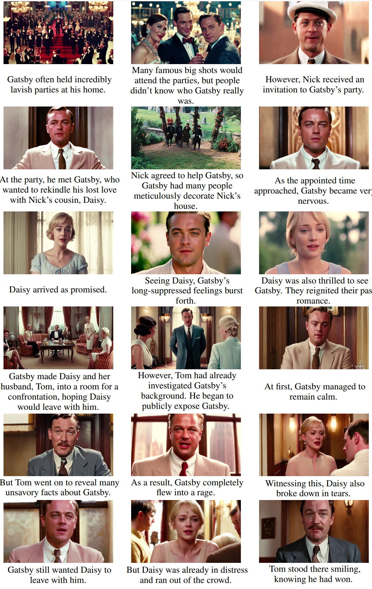

Abstract
Recent advancements in video generation have primarily leveraged diffusion models for short-duration content. However, these approaches often fall short in modeling complex narratives and maintaining character consistency over extended periods, which is essential for long-form video production like movies. We propose MovieDreamer, a novel hierarchical framework that integrates the strengths of autoregressive models with diffusion-based rendering to pioneer long-duration video generation with intricate plot progressions and high visual fidelity. Our approach utilizes autoregressive models for global narrative coherence, predicting sequences of visual tokens that are subsequently transformed into high-quality video frames through diffusion rendering. This method is akin to traditional movie production processes, where complex stories are factorized down into manageable scene capturing. Further, we employ a multimodal script
that enriches scene descriptions with detailed character information and visual style, enhancing continuity and character identity across scenes. We present extensive experiments across various movie genres, demonstrating that our approach not only achieves superior visual and narrative quality but also effectively extends the duration of generated content significantly beyond current capabilities.
Demo
Story Results
Our MovieDreamer is able to generate very long story results with multiple characters well preserved.



Video Results
MovieDreamer is ORTHOGONAL to existing long video generation methods, but benefits from them.
Existing long video generation methods typically focus on generating a long video clip with one image or text as input, ensuring high-quality results of tens of seconds. However, it is extremely computational intensive to scale them up to generate a long video of minutes, and almost impossible for hours. We address this problem from a different perspective, namely, by generating long videos in a hierarchical way. Specifically, we first generate keyframes, which serve as anchor frames to generate the long video. Moreover, our paradigm unifies long story generation and long video generation. Firstly, we surpass the existing methods in terms of the length of the generated content, both in story and video generation, while ensuring no degradation in quality. Secondly, our generation quality also exceeds the current state-of-the-art methods, which is demonstrated in the evaluation metrics. Lastly, our method is highly flexible, allowing the use of some of the current high-quality closed-source video generation models to create exceptionally high-quality long videos with rich narrative, with multiple-character consistency well-preserved.
MovieDreamer + Luma
MovieDreamer + Our Video Model
As a university lab, it is not feasible for us to achieve as good performance as companies in resource-intensive video generation model training. Nevertheless, we still introduce an improved model based on existing methods to generate longer video clips.
Character ID Preservation
MovieDreamer is able to preserve character identity over long time spans in a zero-shot manner.
Methodology
Inspired by movie industry, we design the multimodal script which helps the model to better understand the character, the scene, and the plot.
Our autoregressive model takes multimodal scripts as input and predicts the tokens for keyframes. These tokens are then rendered into images, forming anchor frames for extended video generation. For more details, please refer to our paper.
Compared with Existing Methods
Firstly, our generation paradigm can produce rich, narrative content, significantly surpassing existing methods in terms of duration. The long content we generate is not simply looping. Secondly, quantitative metrics robustly demonstrate that our method ensures high-quality results while generating lengthy content.
Bibtex
@misc{zhao2024moviedreamer,
title={MovieDreamer: Hierarchical Generation for Coherent Long Visual Sequence},
author={Canyu Zhao and Mingyu Liu and Wen Wang and Jianlong Yuan and Hao Chen and Bo Zhang and Chunhua Shen},
year={2024},
url={https://arxiv.org/abs/2407.16655},
}